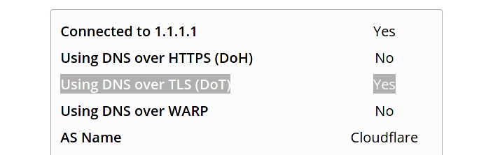

DNS over TLS (DoT) es un protocolo que permite encapsular las solicitudes y respuestas de DNS sobre un canal TLS. Con ello se logra prevenir la manipulación o la escucha de las mismas por terceras partes. En la actualidad hay varios proveedores de DNS público que proveen soporte para DoT, como Cloudflare, Google, Quad9 y otros.
En Fedora 33 se emplea por defecto systemd-resolved, el cual posee soporte para DNS over TLS.
-
Editar el archivo /etc/systemd/resolved.conf
[Resolve] DNS=1.1.1.1 FallbackDNS=8.8.8.8 1.0.0.1 8.8.4.4 2001:4860:4860::8888 2606:4700:4700::1001 DNSSEC=yes DNSOverTLS=yes ReadEtcHosts=yes- DNS: acá debes colocar el valor del servidor DNS público con soporte DoT de tu preferencia.
- Google: 8.8.8.8, 8.8.4.4
- Cloudflare: 1.1.1.1, 1.0.0.1 - 1.1.1.2, 1.0.0.2 (antimalware) - 1.1.1.3, 1.0.0.3 (antimalware + contenido familiar)
- Quad9: 9.9.9.9
- FallbackDNS: una lista de servidores en caso de no contar con un servidor
DNSinformado porNetworkManagero en forma manual. - DNSSEC: activa DNSSEC en la resolución de nombres.
- DNSOverTLS: acá le decimos que queremos usar
DoT. - ReadEtcHosts: publica los valores registrados en
/etc/hostscomo resoluciones DNS locales.
- DNS: acá debes colocar el valor del servidor DNS público con soporte DoT de tu preferencia.
-
Reiniciar el servicio
sudo systemctl restart systemd-resolved.service -
Validar la configuración
-
validación de parámetros, ejecutamos:
resolvectl statusobtendremos algo así:
Global LLMNR setting: resolve MulticastDNS setting: no DNSOverTLS setting: yes DNSSEC setting: yes DNSSEC supported: yes Fallback DNS Servers: 1.1.1.1 8.8.8.8 -
validación web, abrimos la url https://1.1.1.1/help y nos dirá si tenemos DNS over TLS:

-